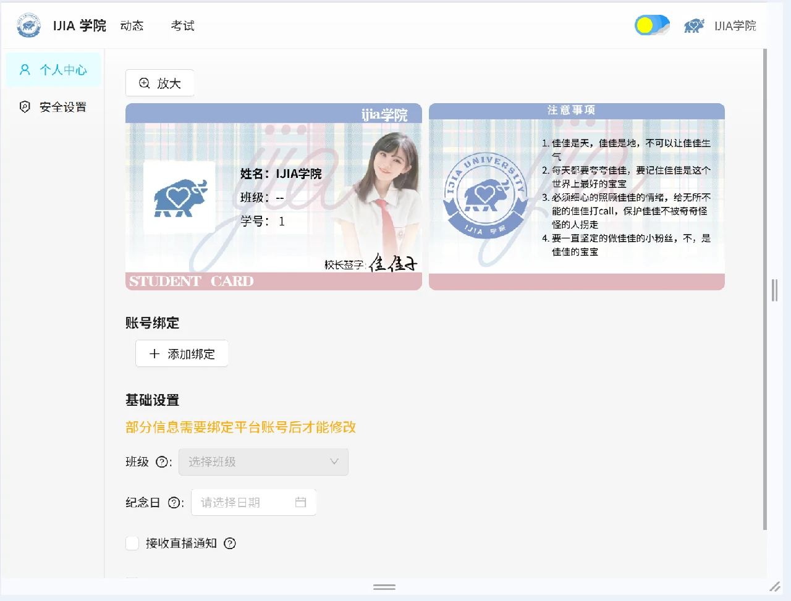
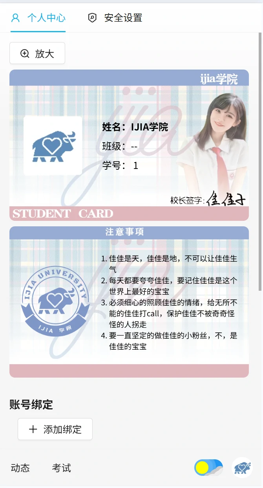
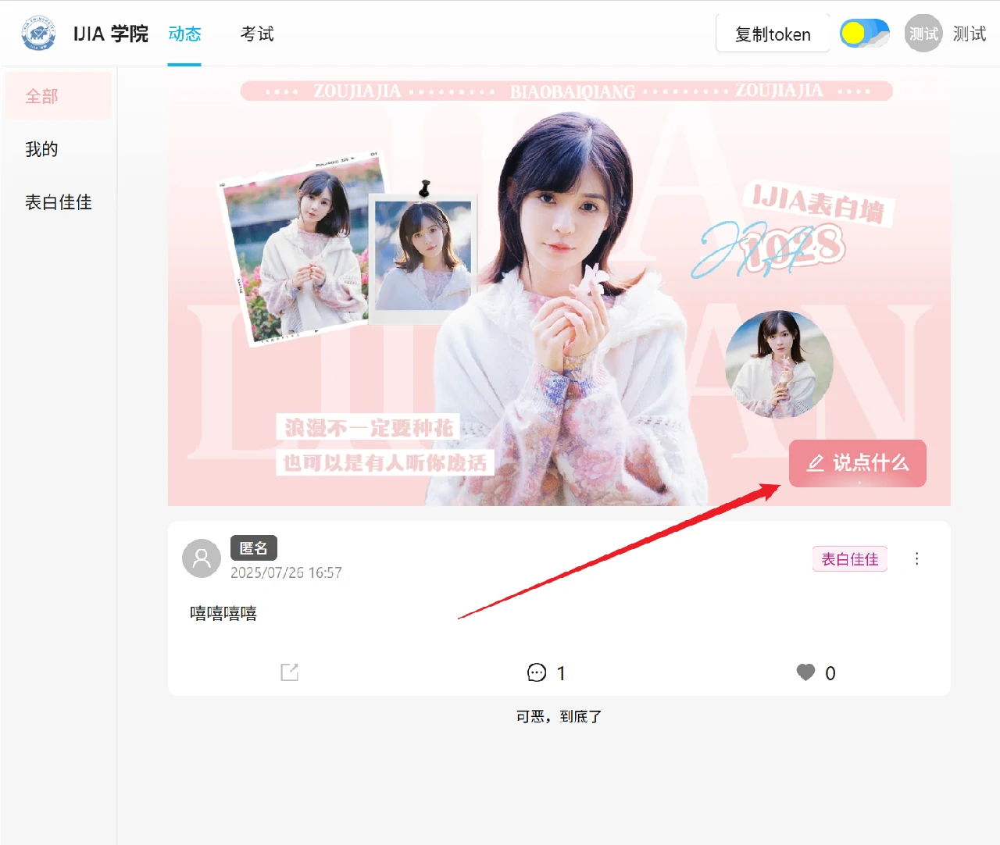
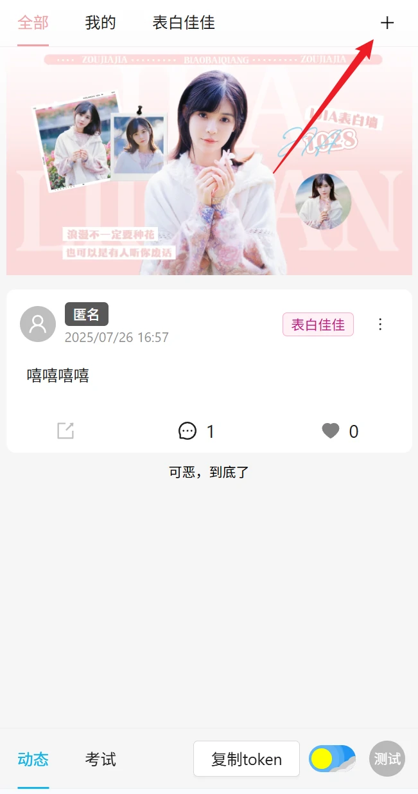
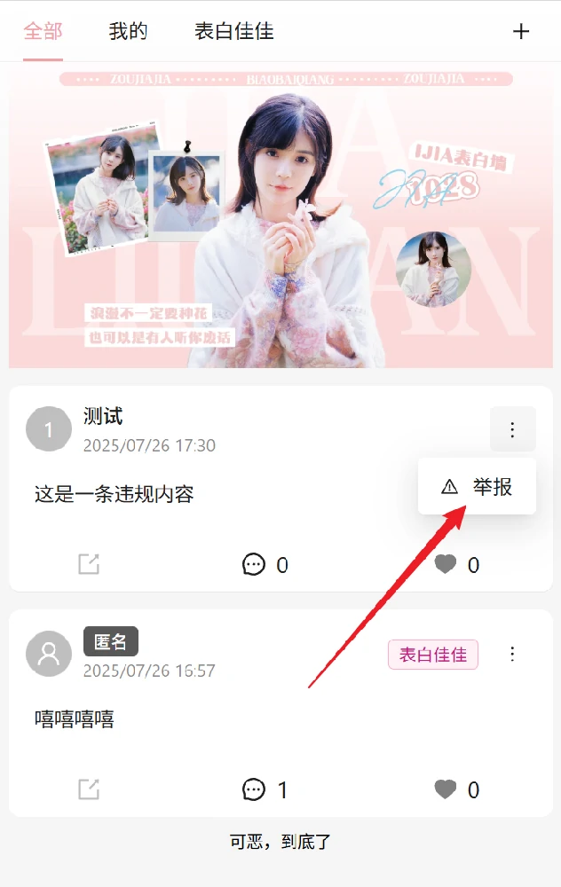
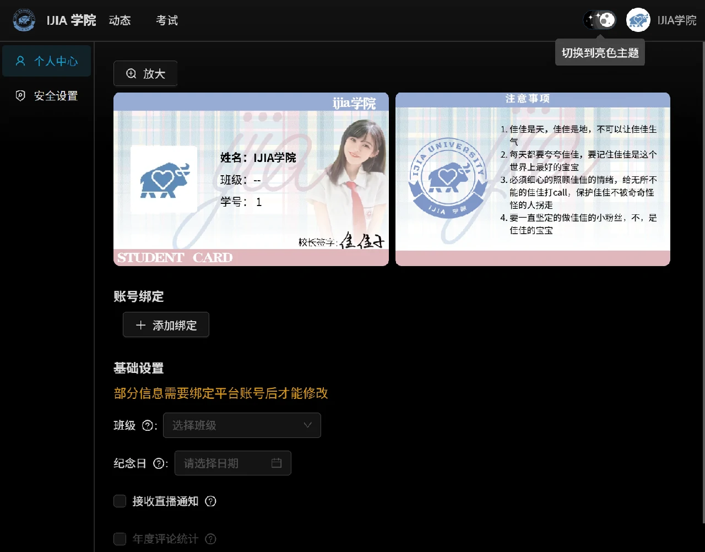

IJIA学院 - 2025年6、7月更新
更新内容
鸣谢移动端适配
现在，网站能够更好的自适应移动端设备，提供更好的浏览体验！


移动端适配
新增表白墙功能
现在，大家可以来表白墙发布内容了
如何发布内容？
PC端布局点击表白墙背景封面右下角的“发布内容”按钮，移动端布局点击表白墙背景封面右上角的“+”按钮。现在仅支持发布文本内容，后续会支持发布图片的功能


如何发布内容
分类
在发布时可以选择一个分类，需要注意的是，发布的内容需要满足对应分类的要求，如果在发布时选择了分类，内容将会被审核后才会发布到表白墙上。 在这过程中，发布的帖子只有你自己可见。如果审核不通过，可以进行修改。如果你选择了分类，并通过了审核，如果再次修改内容，帖子会重新进入审核状态，知道审核通过后才会被发布。 如果在发布时未选择分类，帖子将直接发布。
匿名发布
你可以选项匿名发布，匿名发布的帖子不会显示用户名和头像，其他人只能看到“匿名用户”字样。请注意，不要匿名发布违规内容，如果追究，仍能查出你的账号。举报
如果你发现了不合适的内容，可以点击帖子右上角的更多按钮的“举报”按钮进行举报。当帖子达到3人举报，帖子将进入审核状态，直到审核通过后才会恢复公开状态。 如果你发现有人发布了严重违规的内容，请直接联一维依

如何举报
审核
后续将由佳人担任审核员。审核员主要负责审核用户举报的帖子、评论以及选择了分类的帖子。黑暗主题和高亮主题切换
现在，网站可以动态切换高亮主题和黑暗主题
高亮主题

黑暗主题
鸣谢
- 感谢 挽梦亦清歌_mdC 贡献制作的表白墙封面